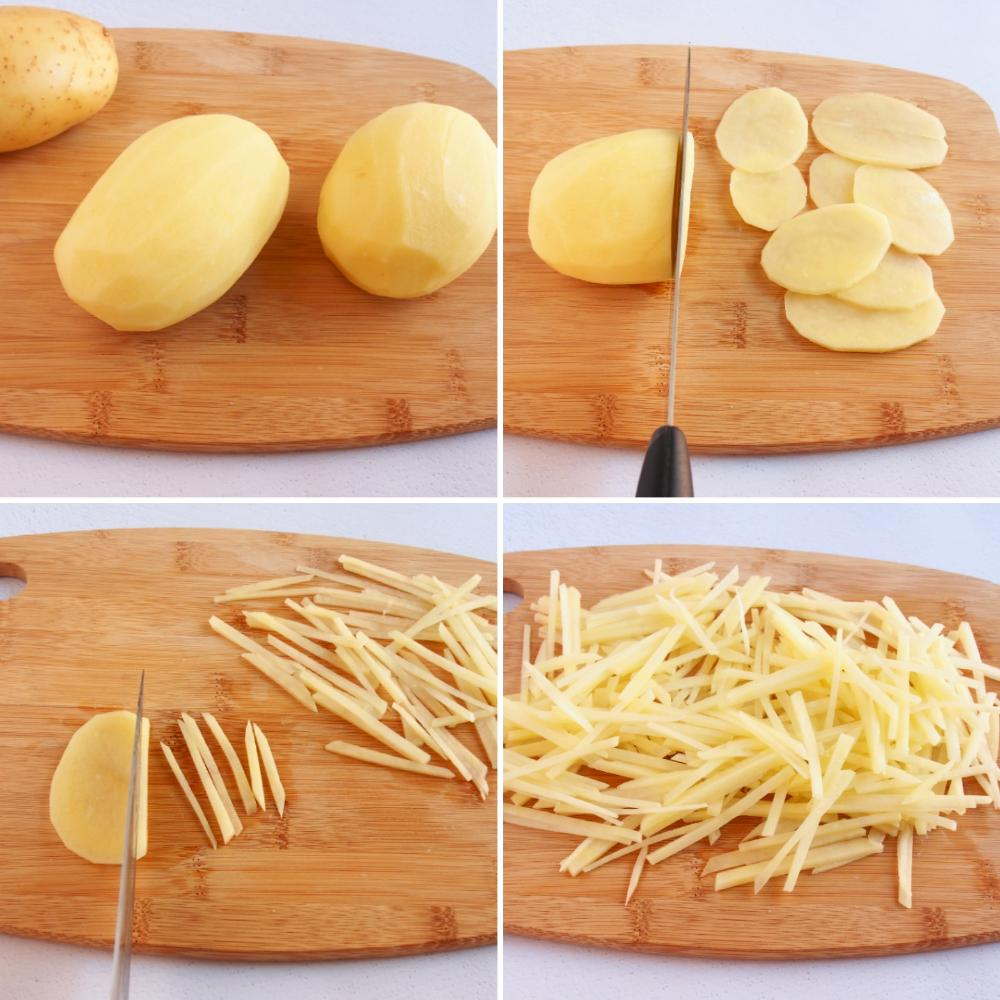
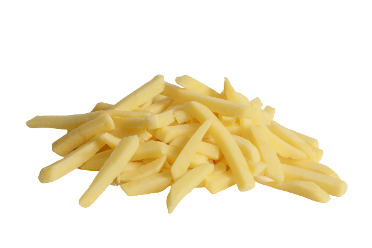

Primero lavamos y cortamos las patatas
Hechamos sal y lo que te de la gana a las papas
Hechalas a freir en aceite calentico hasta que estén listas, y las sacas cuando estén como la foto siguiente.
Y ya está, las patatas perfectas para que las disfrutes campeón, una palmadita eh ale.